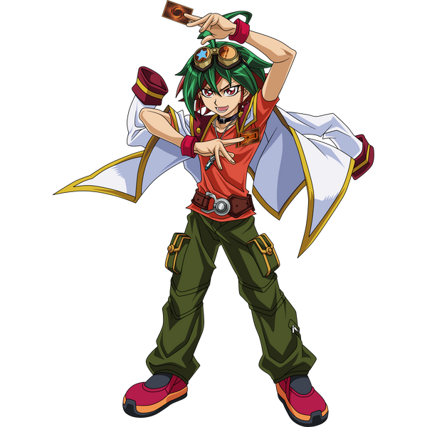
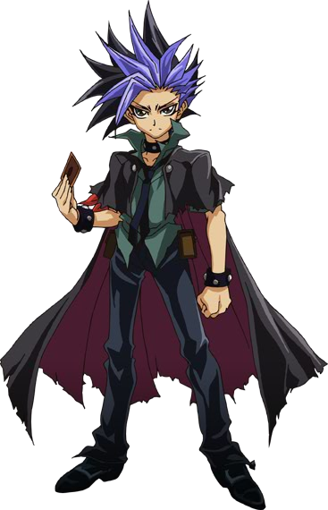
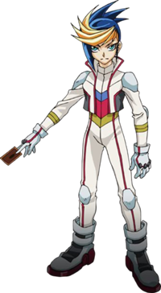
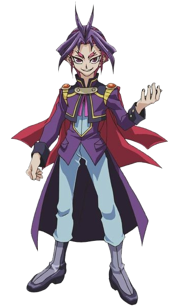
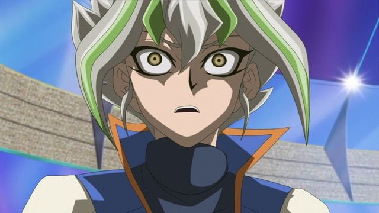

Yuya
Sakaki Yuya est le protagoniste principal de Yu-Gi-Oh! ARC-V et le fils biologique de Yusho et Yoko Sakaki. Il est élève dans la You Show Duel School, où il tente d'accroître son expérience en tant que "Duelliste de divertissement", un type spécifique de duelliste.


Yuto
Yuto est un des protagonistes de la série animée Yu-Gi-Oh! ARC-V. Son physique s'apparente à celui de Yuya Sakaki et viendrait de Heartland, une dimension parallèlle où les duellistes sont des utilisateurs de monstres Xyz exclusivement. Il est l'alter-ego de Yuya, au même titre que Yugo et Yuri ; les quatre étant des fragments d'un cinquième individu nommé Zarc.

Yugo
Yugo est un Turbo Duelliste et était à tort connu parmi les membres de la Résistance comme un « adepte de la fusion » (« sbire » dans la version japonaise) principalement en raison de son nom ressemblant au mot japonais pour « Fusion ». Yugo est constamment à la poursuite de Yuri, cependant, en raison de la confusion de leurs visages similaires et de malentendus, il a d'abord poursuivi Yuto à la recherche de Rin , seulement pour être informé de son erreur par Zuzu Boyle .

Yuri
Yuri est l'un des meilleurs duellistes de la Duel Academy, le plus fidèle au professeur , et la personne responsable de l'enlèvement de Rin et Lulu Obsidian. Yuri est la seule incarnation de Z-ARC qui conserve ses tendances sadiques et sa soif de pouvoir même lorsqu'il n'est pas éveillé , ce qui horrifie même Leo Akaba .

Bonus!
Zarc
Zarc ou Z-Arc est un personnage de Yu-Gi-Oh! L'anime ARC-V et le véritable antagoniste principal de la série. Avant sa révélation, il est connu sous le nom de The Darkness ou Black Shadow résidant à l'intérieur de Yūya Sakaki et de ses homologues dimensionnels. Il est l'incarnation originale de Yūya Sakaki (Standard Dimension), Yūto (Xyz Dimension), Yūgo (Synchro Dimension) et Yūri (Fusion Dimension). L'agressivité croissante de Zarc l'a amené à détruire la dimension originale et à prendre une forme de dragon connue sous le nom de Supreme King Dragon Zarc. Lors de sa confrontation avec Ray, l'âme de Zarc a été divisée en quatre et réincarnée dans quatre vies différentes. Il est le propriétaire original des Quatre Dragons Célestes et l'un des véritables co-créateurs de Pendulum Summon.
